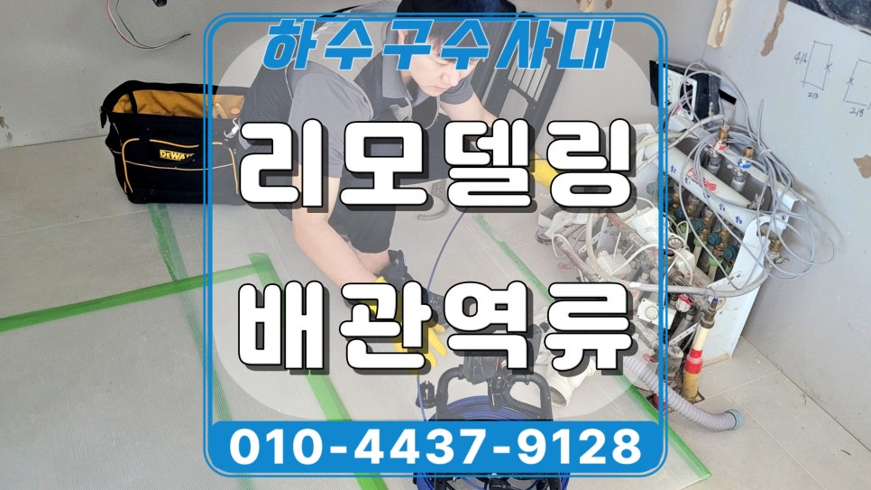
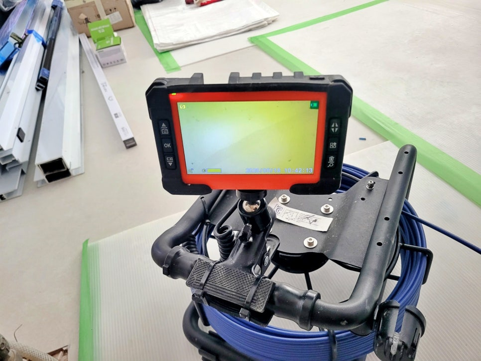
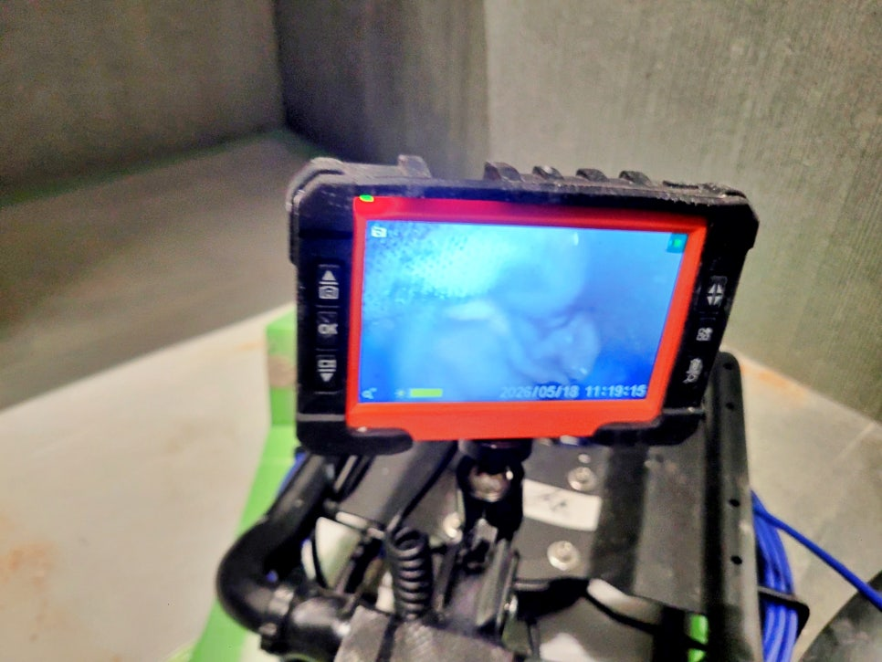
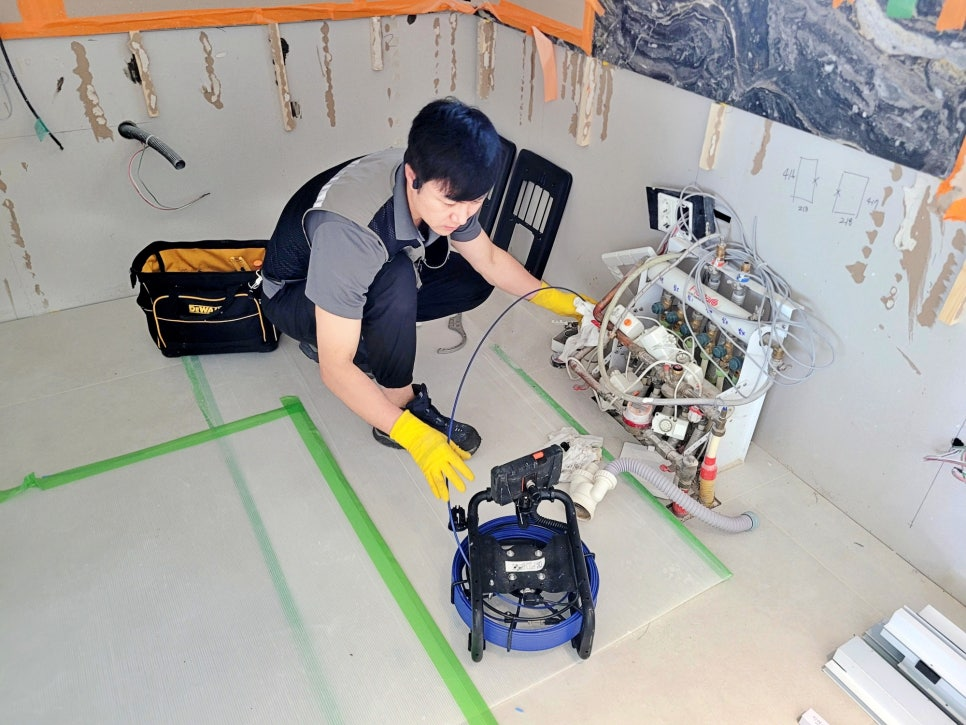
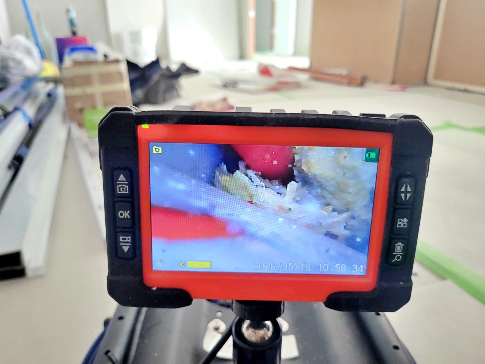
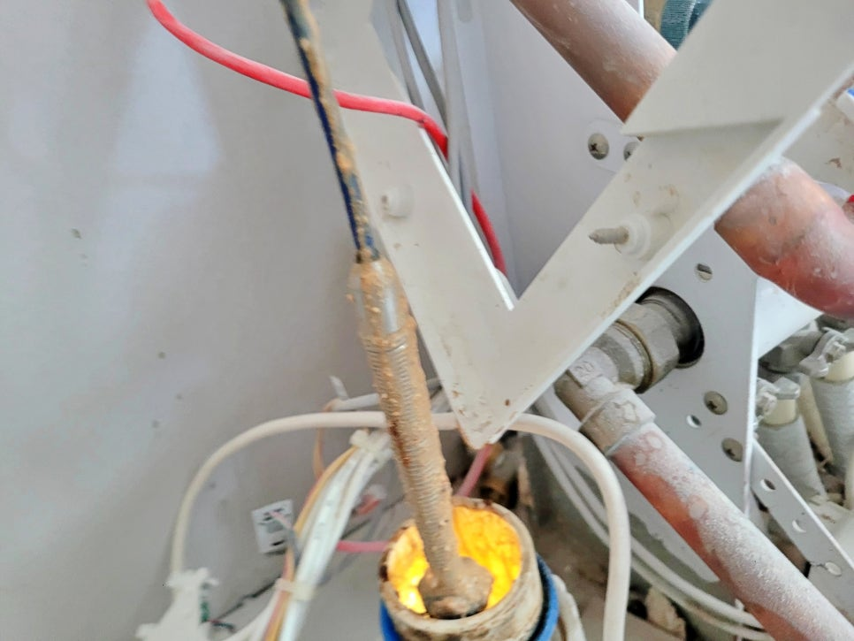
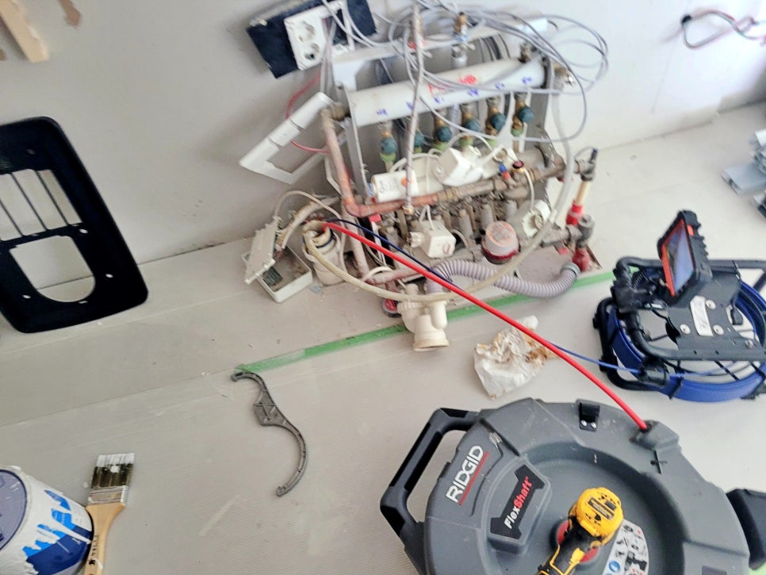

🏠 용인 영덕동 싱크대 배관역류, 리모델링 현장 하수구청소 작업
용인 영덕동 싱크대막힘 전문 시공 후기

📋 작업 개요
- 위치: 용인 영덕동, 영덕동, 용인
- 서비스 유형: 싱크대막힘, 하수구막힘, 배관막힘, 역류해결, 뚫는업체, 배관청소, 설비공사
- 작업 일시: 2026. 5. 23. 14:43
- 업체명: 하수구수사대 (010-5615-2118)
🔍 문제 상황
용인 영덕동 아파트 싱크대 배관역류,
리모델링 공사 현장 하수구청소 작업
용인 영덕동 싱크대 배관역류 청소 현장
반갑습니다.
용인 영덕동 싱크대 배관역류
배관청소 전문 하수구수사대입니다.
오늘 저희가 준비한 현장 후기는
용인 기흥구 영덕동에 있는
아파트 리모델링 공사 현장인데요.
싱크대 설치를 앞두고 하수관 상태를
점검하는 과정에서 물을 부으면
다시 올라오는 증상이 나타나
하수구청소 작업을 진행한 사례입니다.
용인 영덕동 싱크대 배관역류 청소작업
싱크대 배관역류 원인을 화면으로 살펴본 모습
영덕동 아파트 리모델링 현장에 도착해
먼저 내시경 장비를 준비했는데요.
리모델링 현장은 마감이 끝난 뒤
문제가 생기면 싱크대 탈거, 하부장 손상,
바닥 오염까지 이어질 수 있어
설치 전 점검이 중요합니다.
하수구 내부에 쌓인 기름층

🔎 원인 분석
💡 전문가 진단: 용인 영덕동 아파트 싱크대 배관역류,리모델링 공사 현장 하수구청소 작업
용인 영덕동 싱크대 배관역류 원인을
찾기 위해 내시경 화면으로
싱크대 하수 라인 내부를 살펴보니
안쪽에 기름기가 굳어
물길을 좁히고 있는 상태가 보였는데요.
내시경 카메라에 묻어 나오는 기름
겉으로 보기에는 멀쩡해 보여도
관로 안쪽에 찌꺼기가 쌓이면
배수가 느려지고 결국
역류로 이어질 수 있습니다.
싱크대 배관 샤프트 청소 작업 중
싱크대가 들어갈 위치 주변은
아직 공사 중이라 작업 동선을 확보하기
좋은 상태였는데요. 다행히 설치 전에
문제가 드러나 싱크대 하부장을 뜯거나
마감재를 건드리지 않고
바로 청소 작업을 진행할 수 있었습니다.
내시경 화면에는 하수관 안쪽에 들러붙은
기름 찌꺼기와 이물질이 보였습니다.
이런 상태에서 새 싱크대를 설치하면
처음에는 괜찮아 보여도 물 사용량이
늘어나는 순간 바닥 쪽으로

🔧 작업 과정
물이 역류할 가능성이 큽니다.
용인 영덕동 싱크대 배관역류 현장
배수 입구 쪽도 함께 살펴봤는데요.
주방 하수 라인은 음식물 찌꺼기,
세제 찌꺼기, 기름 성분이 섞여
굳는 경우가 많습니다.
내시경 화면을 보며 청소하는 과정
특히 기존 관로를 그대로 사용하는
리모델링 현장은 새 주방을 만들기 전에
내부 상태를 먼저 보는 것이 좋습니다.
이번 용인 영덕동 싱크대 배관역류 현장은
샤프트 장비를 이용해 관로 안쪽에
굳어 있던 기름때를 제거하고,
물길을 막고 있던 이물질들을
천천히 뚫어냈습니다.
그리고 관이 꺾이는 구간은 힘 조절이
중요하기 때문에 내부 상태를 보면서
조심스럽게 진행했는데요.
내시경 화면으로 작업 중인 하수구 내부를
계속 살펴보며, 내부에 남은 찌꺼기가 있는지
반복해서 살피는 과정이 꼭 필요합니다.
리모델링 현장에서는 공사 먼지나
작은 이물질도 하수 라인으로
들어갈 수 있어 기존 기름때와 섞이면
막힘이 더 빨리 생길 수 있으니
공사 중이라도 꼭 점검한 뒤 싱크대를
설치하는 것을 추천드립니다.
싱크대 배관역류 청소 작업 후에는
바로 배수 테스트를 진행했는데요.
역류 현상이 사라지고 배수 흐름도
원활해진 것을 고객님께도 보여드렸습니다.
영덕동 싱크대 배관역류 청소 후기를 마치며
오늘 소개한 용인 영덕동 싱크대 배관역류
현장은 다행히 싱크대 설치 전 물이 넘치는
현상이 발견돼 신속하게 하수구청소로
문제를 해결한 사례였는데요.


✅ 작업 완료
이번에도 하수구수사대가 현장 상태에 맞춰
내시경 점검, 샤프트 작업, 배관청소,
배수 테스트까지 꼼꼼하게 전 과정을
순서대로 진행해 불편을 해결해드렸습니다.
이상으로
용인 영덕동 싱크대 배관역류 현장 후기를
마치겠습니다.
끝까지 읽어 주셔서 감사합니다.
#용인영덕동싱크대배관역류 #용인영덕동하수구청소 #용인기흥구하수구업체 #영덕동싱크대막힘 #리모델링배관점검 #영덕동싱크대역류전문 #영덕동하수관청소업체 #하수구수사대




⚠️ 주방 싱크대 배관 막힘 예방 수칙
- ✅ 기름기가 묻은 식기나 프라이팬은 설거지 전 키친타올로 반드시 기름때를 닦아내세요.
- ✅ 주기적으로 싱크대 개수대에 뜨거운 물을 가득 받아 한 번에 내려 배관 내부 기름을 씻어내세요.
- ✅ 배수구 거름망을 미세한 필터로 사용하시고 음식물 찌꺼기가 틈으로 새어 들지 않게 관리하세요.
- ✅ 베이킹소다와 식초를 뜨거운 물과 함께 일주일에 한 번씩 부어주면 배관 살균과 막힘 예방에 좋습니다.
💡 핵심 정리
- 확실한 장비 작업(내시경 점검 및 샤프트 스케일링)으로 원인을 뿌리 뽑습니다.
- 작업 후 1년 이내에 동일한 부위 재발 시 100% 무상 A/S 서비스를 보장합니다.
- 서울 · 경기 · 인천 전 지역에 24시간 언제든 긴급 출동할 수 있도록 항시 대기 중입니다.
❓ 자주 묻는 질문 (FAQ)
🚨 용인 영덕동 싱크대막힘 문제로 고민이신가요?
정확한 원인 진단과 확실한 시공으로 재발 없는 해결을 약속드립니다.
24시간 긴급 출동 | 서울 · 경기 · 인천 전지역 | 1년 내 재발 시 무상 A/S